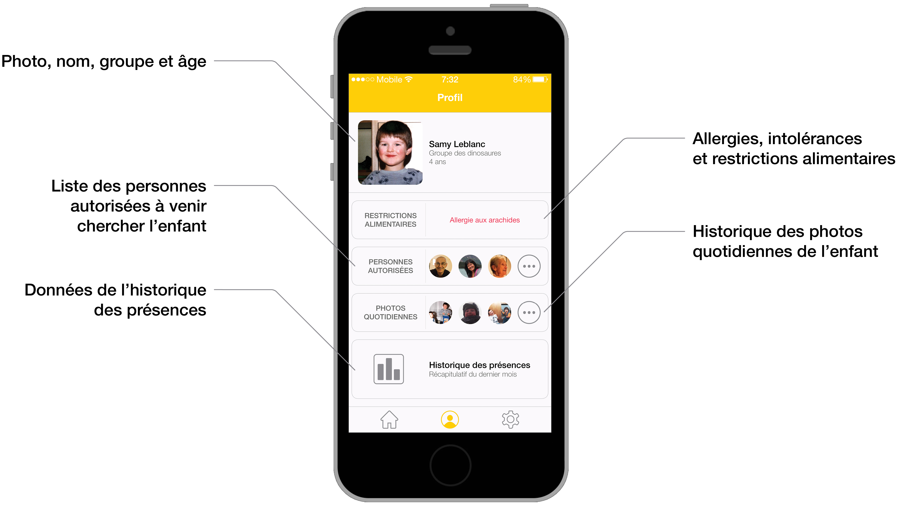
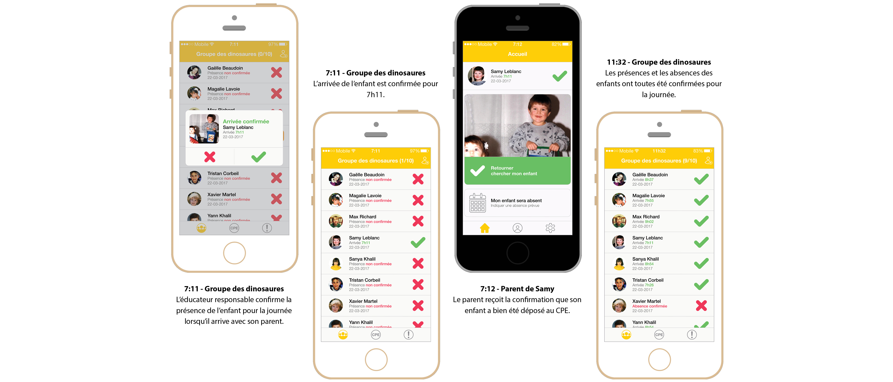

Daycare Attendance
Management Platform
Improving the safety of children in daycare
through an attendance management platform.
Summary
The arrival and departure of children are key moments in the day for educators in public childcare centers (CPE). As custody of the children passes from the parents to the educators, the monitoring of attendance becomes more complicated, with children's safety at stake. Présence Notée is a mobile app that helps CPE staff manage children's attendance by including parents in the process. Owing to a double validation of their child's presence, parents are able to support the staff in their work. The collaboration between parents, educators, and management helps to ensure the safety of the children.
My Role
Conducting a two-week-long ethnography in 4 CPE, identifying problems that could be solved in CPE, organizing and leading a codesign activity with parents, educators and CPE's managers, evaluating current technologies and security measures, designing a mobile application as a solution, developing the application architecture, writing a report
Tools
Axure, Photoshop, Illustrator, InDesign, Lightroom, Premiere Pro, Codesign maketools
Context
The CPE Quebec Association (AQCPE) had propositioned the University of Montreal to help improve human relations between the CPE, its staff, the community, the children, and their parents. Occupational health and safety were also important issues to consider in this project context. As part of the project, four day-care centers in the greater Montreal area became partners. These CPE's provided an area for field investigation, thereby allowing for the identification of issues which could then be addressed in the context of the project.
Research & Development
In recent years, CPE had to face numerous budget cuts from the Quebec government. A heavier workload than ever is being placed on the backs of educators who were already very busy. The research phases of this project attempted to better understand the current climate in which CPE operates. An ethnography phase was conducted to identify various problems. Solutions were then codesigned with daycare users in order to improve the situation.
Ethnography
The two weeks of ethnography consisted of observations of the interactions between the management, the educators, the children and their parents. In addition, short interviews were also conducted with members of the management, educators, and parents to better understand an average day in the CPE. The results of the field research highlighted some specific issues in CPE, namely: the management of children's arrivals, attendance and departures in the daycare center.
Codesign
To solve this problem, an initial martyr concept was developed and then put to the test during a codesign activity. The participants in this activity consisted of a CPE director, an educator, and parents with at least one child in daycare.
The martyr concept proposed to add an iPad-type tablet in all of the entrances of the CPE and obligated that the parents take a photo with their child in order to confirm their arrival and departure, thus making the system more secure. This measure may seem slightly excessive, but it is exactly the purpose of this exercise: to get the participants to react in order to know how to modify and improve the concept.
The Application
The Présence Notée attendance management platform is offered in the form of a mobile application for the parents, the educators, and the CPE management. The application contains a profile for each child attending the daycare center, and allows parents to confirm or disconfirm the child's presence for the day, and their arrival and departure. The information is updated in real time on the parents' and educators' phones to ensure the safety of the children.

Usage Scenario
Here is a typical scenario (in French) where the application is used by a parent (black phone) to confirm the presence of their child to the educator (white phone).
App Wireframe
Functional framework for the Présence Notée application (in French).